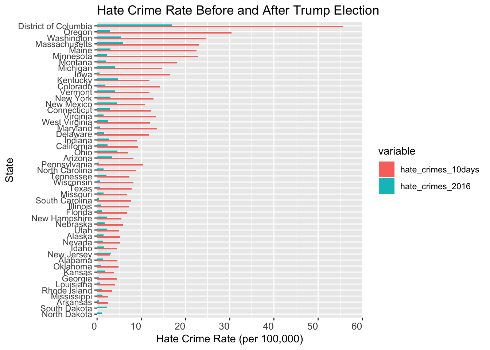

The plot above compares the hate crime rates before and after Trump’s election. The green portion depicts the rate for 2016. The red bar represents the hate crime rate in the 10 days after Trump’s election, extrapolated into a year rate (for comparison purposes). As can be seen by the plot, the hate crime rate increased substantially in the days after Trump’s election for most states. D.C. experienced the greatest increase, most likely due to the fact that D.C. is the political hub in the U.S.
This heat map shows each state’s hate crime rate for the year 2016 and its share of Trump voters. Though our group expected to see a higher rate for those states with a large proportion of Trump voters, we instead saw little relationship between the two variables. Some states had a high percent of Trump voters, but a relatively small hate crime rate (such as Oklahoma), while others states had both a high rate and a high share of Trump voters (such as Kentucky).